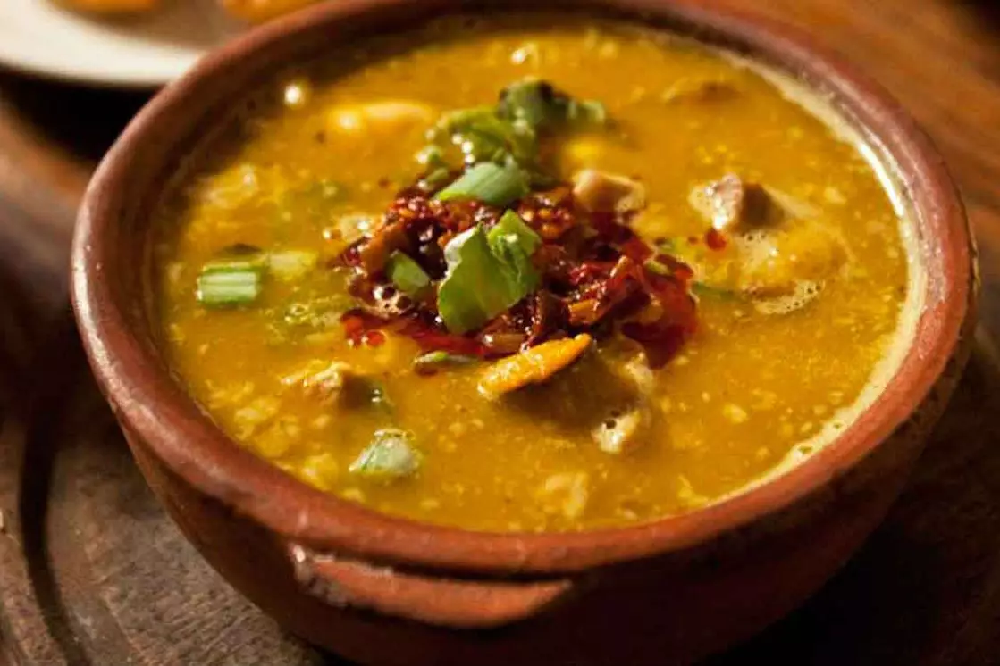
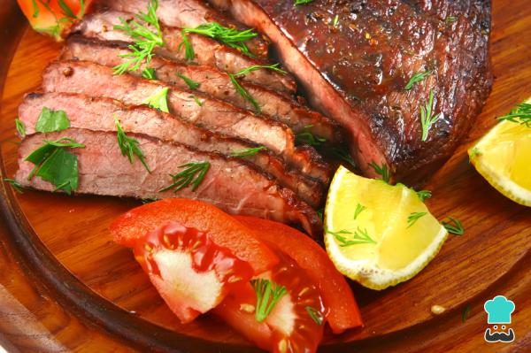
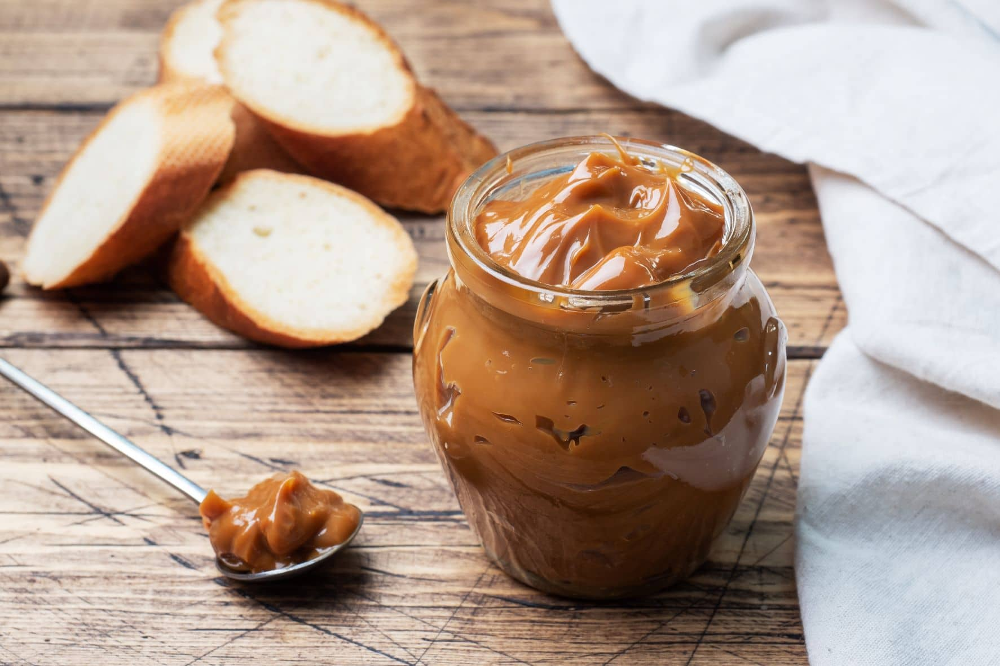
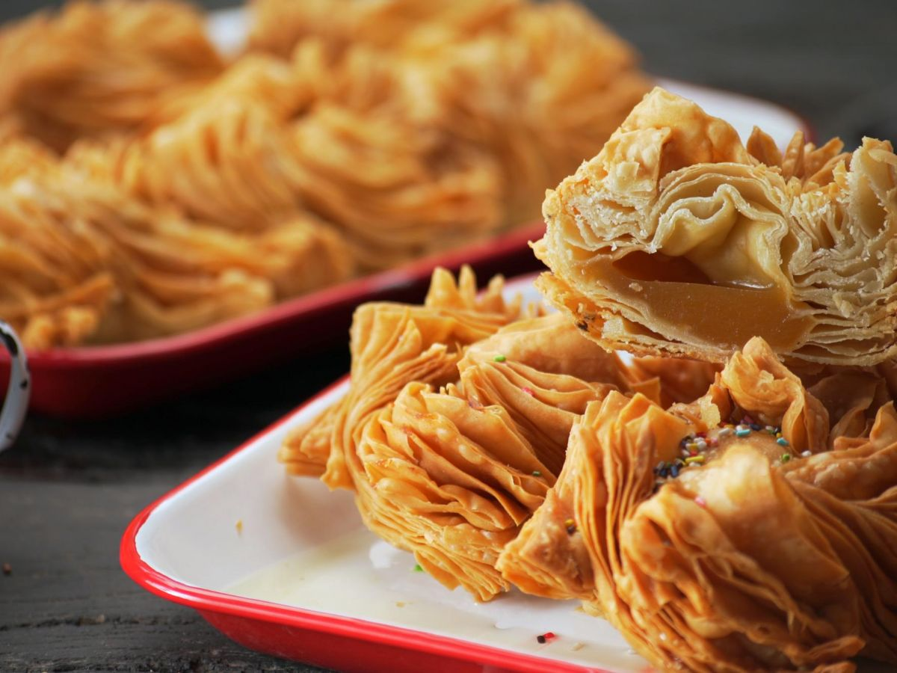
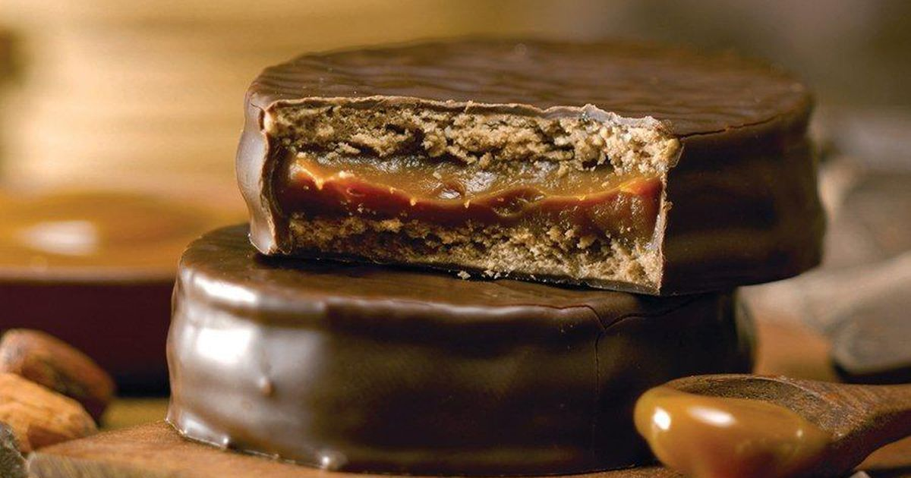
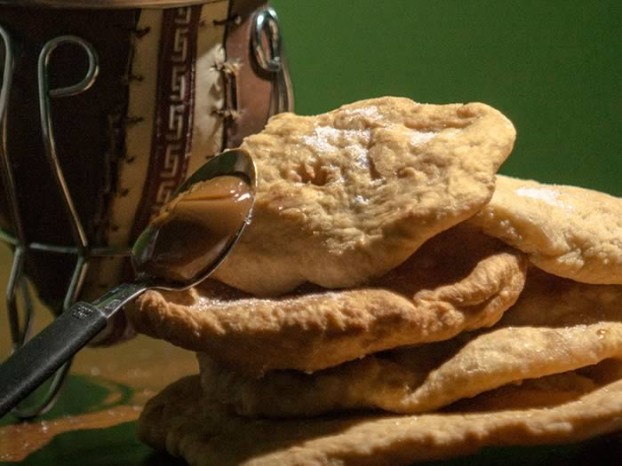

Empanada
Las empanadas argentinas son todo un clásico de la gastronomía de este país, y es que constituyen...
Leer mas

Locro
El locro criollo argentino es un plato elaborado a base de maíz blanco, porotos y zapallo o calabaza...
Leer mas
Choripan
En este plato argentino, se cocina chorizo a la parrilla y se coloca dentro de un pan...
Leer mas


Dulce de leche
es un producto lácteo producido por la cocción de leche con azúcar, y que generalmente...
Leer mas

Pastelitos
Los pastelitos criollos son un tipo de pastel dulce de la cocina de Argentina, hechos ...
Leer mas

Alfajores
Como golosina de producción masiva su elaboración se remonta a la década de 1950 ...
Leer mas

Torta frita
Es un bocado típico de la gastronomía rioplatense. Es similar en preparación y origen...
Leer mas